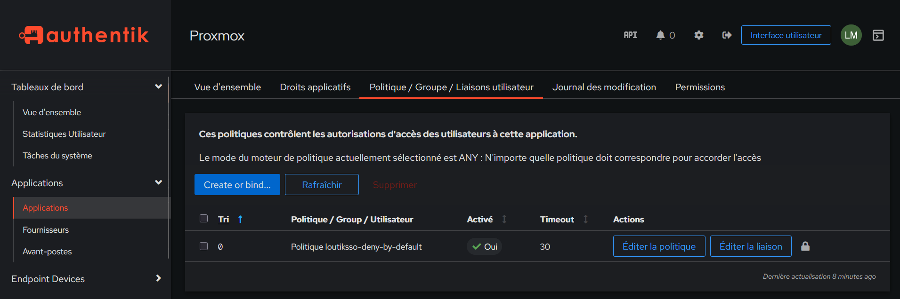

Dernière édition : 2026-07-20
Application politique de restriction d'accès aux applications

Informations
- Date de mise à jour : 2026-07-20
- Service ciblé : Authentik
- Auteur : Louis MEDO
- Responsable : Louis MEDO
1. Contexte et Objectif
Ce runbook détaille la procédure opérationnelle pour lier la politique d'expression globale (loutiksso-deny-by-default) directement à une application cible dans Authentik. Cette action doit être exécutée à chaque intégration d'un nouveau service (ex: Proxmox) afin d'appliquer le modèle de sécurité "Deny by Default". Elle garantit que seuls les utilisateurs appartenant aux groupes dynamiques spécifiés par la norme REF-005 peuvent accéder au service.
2. Prérequis
- Accès administrateur (Superuser) actif sur la console d'administration Web Authentik.
- Politique d'expression
loutiksso-deny-by-defaultpréalablement créée et fonctionnelle. - Application cible (ex: Proxmox) déjà configurée dans le répertoire des applications.
3. Procédure d'exécution
- Accès au menu de liaison de l'application. Naviguer dans l'interface d'administration pour cibler les paramètres de sécurité spécifiques de l'application.
Applications > Applications > [Sélectionner l'application] > Politique / Groupe / Liaisons utilisateur
-
[Sélectionner l'application]: Clic sur l'application concernée (ex: Proxmox) pour ouvrir sa vue détaillée. -
Attachement de la politique de restriction. Lier la politique existante chargée d'évaluer les droits d'accès au niveau de l'application.
Create or bind... > Lier une politique existante > Cible: loutiksso-deny-by-default > Ordre: 0
Cible: loutiksso-deny-by-default: Sélectionne la politique contenant le script Python d'évaluation.Ordre: 0: Assigne la priorité la plus haute pour s'assurer que cette règle est évaluée en premier.
4. Validation

- Vérifier visuellement dans l'onglet Politique / Groupe / Liaisons utilisateur de l'application que la ligne contenant
Politique loutiksso-deny-by-defaultest présente et que la colonne Activé indiqueOui. - Effectuer un test de connexion avec un compte utilisateur ne possédant pas les groupes requis (ex:
inf-[slug]-admouinf-[slug]-usr) : l'accès doit renvoyer une erreur d'autorisation explicite (Accès refusé). - Effectuer un test de connexion avec un compte utilisateur possédant le groupe adéquat : la redirection vers le service (ex: l'interface Proxmox) doit aboutir avec succès.